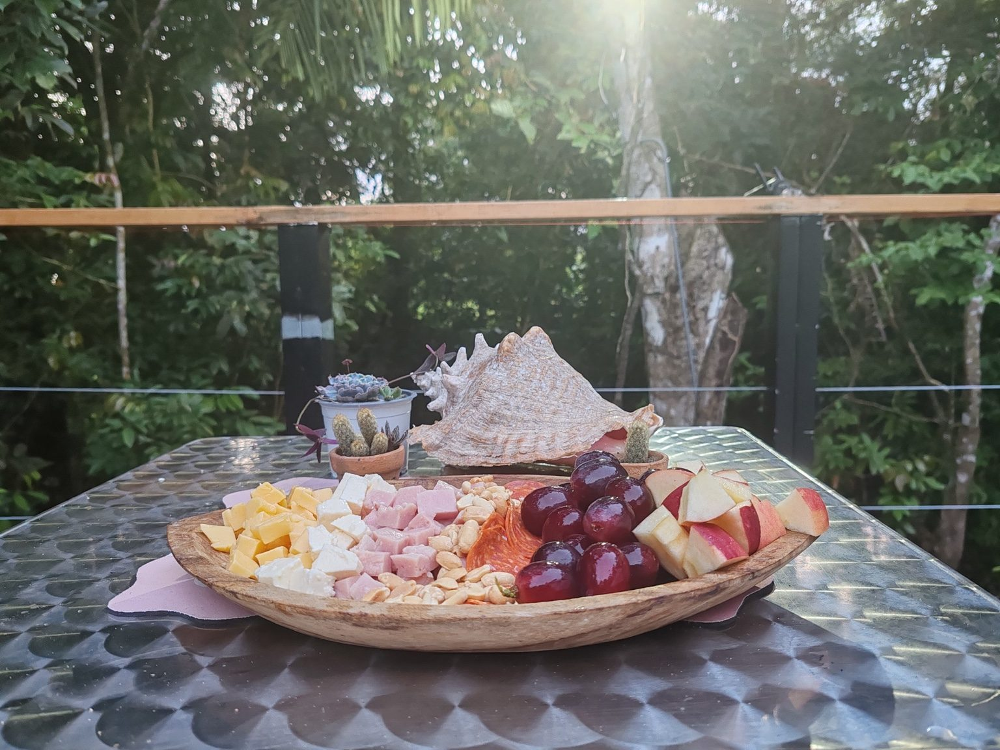

Approximately 30 minutes from Penonomé. The final section is a gravel road. A regular sedan can normally reach the property.
Travel toward Churuquita Grande, then continue by walking approximately 15–20 minutes from the main-road area. Confirm the current route before travel.
Scarlett Martínez International Airport near Río Hato is the closest major airport, roughly 50–60 minutes by car depending on conditions.
After payment is confirmed, guests receive a driving-direction video, parking instructions, door code and important property information.
For the widest choice of groceries, pharmacies, fuel and restaurants, stop in Penonomé before driving to the property. The Cabin has a full kitchen and the Dome has a compact kitchenette.
Breakfast: not included, but it may be arranged in advance with the local caretaker for approximately US$10 per person and delivered to the Cabin or Dome.

Panama phone: 6366-0557
Confirm the small Cabin/Dome profile image before sending.
aqeelcabin@gmail.com
Cash may be arranged when approved in advance.